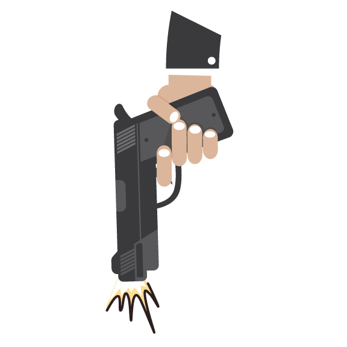
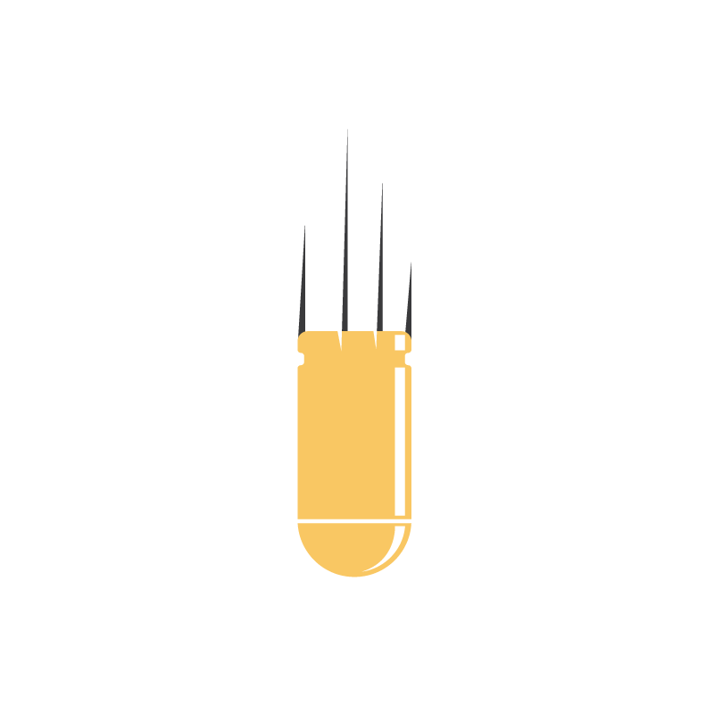

Jumat Horor di Duren Tiga
Awan kelam seperti menggelayut di langit Trunojoyo 3 pada awal semester dua 2022. Terbunuhnya ajudan seorang polisi jenderal bintang dua di rumah dinas bosnya sendiri di Kompleks Polri, Duren Tiga, Jakarta Selatan, pada Jumat, 8 Juli 2022 membuat semua mata menyoroti institusi hukum terbesar di Indonesia ini. Begitu banyak kejanggalan dalam pengungkapan kasus Jumat horor di Duren Tiga ini. Ada skenario “invisible hand” yang membuat pengungkapan kasus ini begitu berbelit.
Namun perlahan, satu per satu kebohongan dari skenario palsu itu pun terungkap.


Kepala Project
Irwan Nugroho
Naskah
Fajar Yusuf R
Editor
Dieqy Hasbi Widhana
Penyelaras Bahasa
Habib Rifai
Frontend Developer
Dedi Arief Wibisono
Ilustrasi
Denny Putra
Edi Wahyono